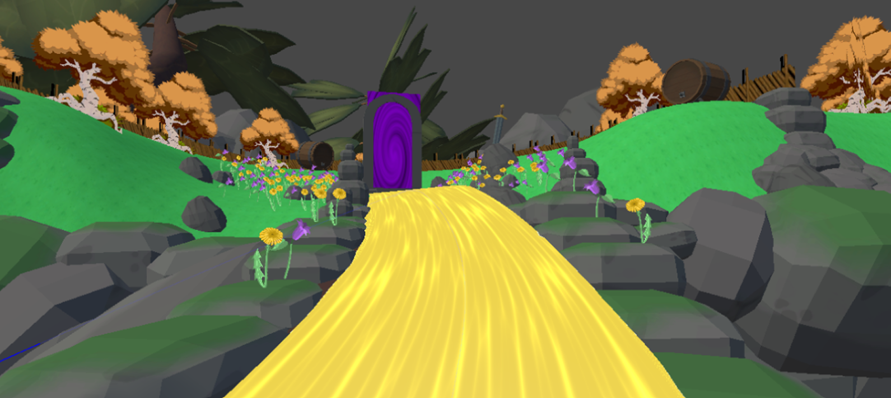
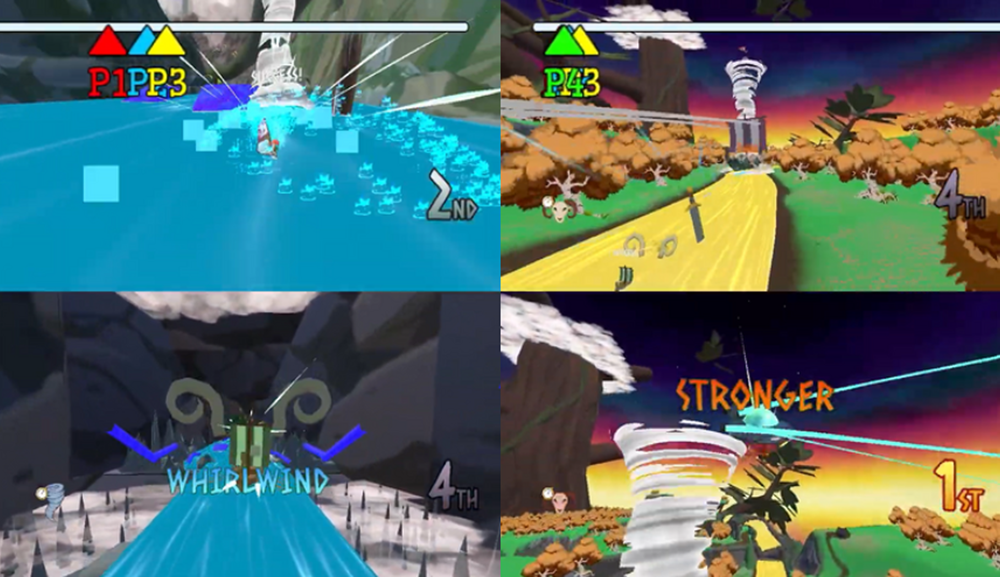

FJORD FURY
OVERVIEW
PROJECT PERIOD: 10.11.2025 - 18.12.2025
TEAM: 23 People
MY ROLE: 3D Artist
MADE WITH: Unity, Blender
PLAY ON itch.io


ABOUT THE PROJECT
Fjord Fury was developed by our entire Game Design class during our
second year. The goal of the project was to learn how to plan and
execute a full game production from pre-production to completion.
Before entering full production, we worked in smaller groups to develop
the necessary pre-production, including the planning and groundwork needed
for the final game.
Fjord Fury was created using the “Trolls vs Vikings” license, courtesy of
Megapop
CONCEPT
Trolls vs Vikings Fjord Fury is a local multiplayer Racing game. Do trick combos to activate one of three different abilities to speed through the maps, spawn a tornado, or spawn a jump pad to distrupt the path for other players. The player can choose between 6 different racers; Vikings, trolls, gods, windsurfer, aliens, or draugr. Speed, trick combos, and abilities define this game.
